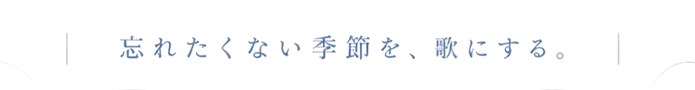

JAPANESE IDOL GROUP

CONCEPT
わたしたちについて
過ぎてしまえば、 どれもきれいな季節だった。 だから、歌にして残しておく。
「君がいた季節」は、2024年に結成された12人のアイドルグループです。グループ名には、誰の記憶にもある「あの頃」を、歌というかたちで栞のように挟んでおきたい、という願いを込めました。
春の教室、夏の終わりの帰り道、はじめて雪を見た日。特別ではないけれど、確かにそこにあった時間を、わたしたちは丁寧にうたいます。
いつか思い出したときに、少しだけあたたかくなる。そんな季節の一部になれたら幸いです。
MEMBER
メンバー
DISCOGRAPHY
作品
SCHEDULE
スケジュール
MEDIA
映像
FOLLOW US
公式アカウント